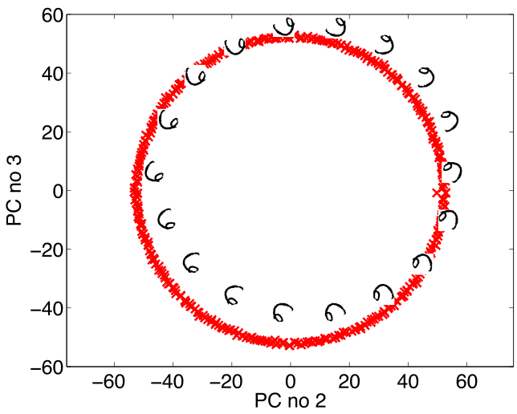
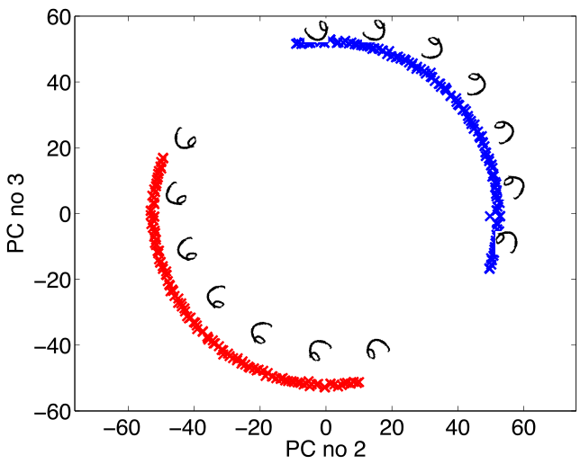
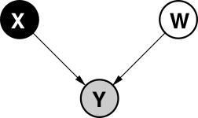
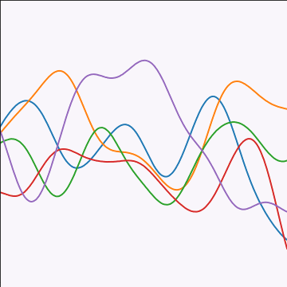

R250: Unsupervised Learning with Gaussian Processes
Virtual (Zoom)
High Dimensional Data
- USPS Data Set Handwritten Digit
- 3648 dimensions (64 rows, 57 columns)
- Space contains much more than just this digit.
USPS Samples
- Even if we sample every nanonsecond from now until end of universe you won’t see original six!
Simple Model of Digit
- Rotate a prototype
|

|

|
Low Dimensional Manifolds
- Pure rotation is too simple
- In practice data may undergo several distortions.
- For high dimensional data with structure:
- We expect fewer distortions than dimensions;
- Therefore we expect the data to live on a lower dimensional manifold.
- Conclusion: Deal with high dimensional data by looking for a lower dimensional non-linear embedding.
Dimensionality Reduction
- Compress the data by replacing the original data with reduced number of continuous variables.
Dimensionality Reduction
- Position of each body part of a marionette could be thought of as our data, \(\mathbf{ x}_i\).
- Each data point is the 3-D co-ordinates of all the different body parts
- Movement of parts determined by puppeteer via strings.
- For a simple puppet with one stick can move the stick up and down, left and right and twist.
Dimensionality Reduction
- This gives three parameters in the puppeteers control.
- Implies that the puppet we see moving is controlled by only 3 variables.
- These 3 variables are often called the hidden or latent variables.
- Assume similar for real world data, observations are derived from lower dimensional underlying process
Examples in Social Sciences
- Underpins psychological scoring such as IQ or personality tests
- Myers-Briggs assumes personality is four dimensional.
- Political belief (left/right wing).
- Also language modelling has taken similar approaches: word2vec
Gaussian Variables and Linear Dimensionality Reduction
- Return to non-linear shortly.
- Now: Linear dimensionality reduction.
- First: Review Gaussian density properties.
Two Important Gaussian Properties
Sum of Gaussians
Sum of Gaussian variables is also Gaussian.
\[y_i \sim \mathcal{N}\left(\mu_i,\sigma_i^2\right)\]
And the sum is distributed as
\[ \sum_{i=1}^{n} y_i \sim \mathcal{N}\left(\sum_{i=1}^n\mu_i,\sum_{i=1}^n\sigma_i^2\right) \]
(Aside: As sum increases, sum of non-Gaussian, finite variance variables is also Gaussian because of central limit theorem.)
Scaling a Gaussian
Scaling a Gaussian leads to a Gaussian.
\[y\sim \mathcal{N}\left(\mu,\sigma^2\right)\]
And the scaled variable is distributed as
\[wy\sim \mathcal{N}\left(w\mu,w^2 \sigma^2\right).\]
Multivariate Gaussian Properties
If \[ \mathbf{ y}= \mathbf{W}\mathbf{ x}+ \boldsymbol{ \epsilon}, \]
Assume \[ \begin{align} \mathbf{ x}& \sim \mathcal{N}\left(\boldsymbol{ \mu},\mathbf{C}\right)\\ \boldsymbol{ \epsilon}& \sim \mathcal{N}\left(\mathbf{0},\boldsymbol{ \Sigma}\right) \end{align} \]
Then \[ \mathbf{ y}\sim \mathcal{N}\left(\mathbf{W}\boldsymbol{ \mu},\mathbf{W}\mathbf{C}\mathbf{W}^\top + \boldsymbol{ \Sigma}\right). \] If \(\boldsymbol{ \Sigma}=\sigma^2\mathbf{I}\), this is Probabilistic PCA (Tipping and Bishop, 1999).
Latent Variables
Your Personality
Factor Analysis Model
\[ \mathbf{ y}= \mathbf{f}(\mathbf{ z}) + \boldsymbol{ \epsilon}, \]
\[ \mathbf{f}(\mathbf{ z}) = \mathbf{W}\mathbf{ z} \]
Closely Related to Linear Regression
\[ \mathbf{f}(\mathbf{ z}) = \begin{bmatrix} f_1(\mathbf{ z}) \\ f_2(\mathbf{ z}) \\ \vdots \\ f_p(\mathbf{ z})\end{bmatrix} \]
\[ f_j(\mathbf{ z}) = \mathbf{ w}_{j, :}^\top \mathbf{ z}, \]
\[ \epsilon_j \sim \mathcal{N}\left(0,\sigma^2_j\right). \]
Data Representation
\[ \mathbf{Y} = \begin{bmatrix} \mathbf{ y}_{1, :}^\top \\ \mathbf{ y}_{2, :}^\top \\ \vdots \\ \mathbf{ y}_{n, :}^\top\end{bmatrix}, \]
\[ \mathbf{F} = \mathbf{Z}\mathbf{W}^\top, \]
Exercise 1
Show that, given all the definitions above, if, \[ \mathbf{F} = \mathbf{Z}\mathbf{W}^\top \] and the elements of the vector valued function \(\mathbf{F}\) are given by \[ f_{i, j} = f_j(\mathbf{ z}_{i, :}), \] where \(\mathbf{ z}_{i, :}\) is the \(i\)th row of the latent variables, \(\mathbf{Z}\), then show that \[ f_j(\mathbf{ z}_{i, :}) = \mathbf{ w}_{j, :}^\top \mathbf{ z}_{i, :} \]
Latent Variables vs Linear Regression
\[ x_{i,j} \sim \mathcal{N}\left(0,1\right), \] and we can write the density governing the latent variable associated with a single point as, \[ \mathbf{ z}_{i, :} \sim \mathcal{N}\left(\mathbf{0},\mathbf{I}\right). \]
\[ \mathbf{f}_{i, :} = \mathbf{f}(\mathbf{ z}_{i, :}) = \mathbf{W}\mathbf{ z}_{i, :} \]
\[ \mathbf{f}_{i, :} \sim \mathcal{N}\left(\mathbf{0},\mathbf{W}\mathbf{W}^\top\right) \]
Data Distribution
\[ \mathbf{ y}_{i, :} = \sim \mathcal{N}\left(\mathbf{0},\mathbf{W}\mathbf{W}^\top + \boldsymbol{\Sigma}\right) \]
\[ \boldsymbol{\Sigma} = \begin{bmatrix}\sigma^2_{1} & 0 & 0 & 0\\ 0 & \sigma^2_{2} & 0 & 0\\ 0 & 0 & \ddots & 0\\ 0 & 0 & 0 & \sigma^2_p\end{bmatrix}. \]
Mean Vector
\[ \mathbf{ y}_{i, :} = \mathbf{W}\mathbf{ z}_{i, :} + \boldsymbol{ \mu}+ \boldsymbol{ \epsilon}_{i, :} \]
\[ \boldsymbol{ \mu}= \frac{1}{n} \sum_{i=1}^n \mathbf{ y}_{i, :}, \] \(\mathbf{C}= \mathbf{W}\mathbf{W}^\top + \boldsymbol{\Sigma}\)
Principal Component Analysis
Hotelling (1933) took \(\sigma^2_i \rightarrow 0\) so \[ \mathbf{ y}_{i, :} \sim \lim_{\sigma^2 \rightarrow 0} \mathcal{N}\left(\mathbf{0},\mathbf{W}\mathbf{W}^\top + \sigma^2 \mathbf{I}\right). \]
Degenerate Covariance
\[ p(\mathbf{ y}_{i, :}|\mathbf{W}) = \lim_{\sigma^2 \rightarrow 0} \frac{1}{(2\pi)^\frac{p}{2} |\mathbf{W}\mathbf{W}^\top + \sigma^2 \mathbf{I}|^{\frac{1}{2}}} \exp\left(-\frac{1}{2}\mathbf{ y}_{i, :}\left[\mathbf{W}\mathbf{W}^\top+ \sigma^2 \mathbf{I}\right]^{-1}\mathbf{ y}_{i, :}\right), \]
Computation of the Marginal Likelihood
\[ \mathbf{ y}_{i,:}=\mathbf{W}\mathbf{ z}_{i,:}+\boldsymbol{ \epsilon}_{i,:},\quad \mathbf{ z}_{i,:} \sim \mathcal{N}\left(\mathbf{0},\mathbf{I}\right), \quad \boldsymbol{ \epsilon}_{i,:} \sim \mathcal{N}\left(\mathbf{0},\sigma^{2}\mathbf{I}\right) \]
\[ \mathbf{W}\mathbf{ z}_{i,:} \sim \mathcal{N}\left(\mathbf{0},\mathbf{W}\mathbf{W}^\top\right) \]
\[ \mathbf{W}\mathbf{ z}_{i, :} + \boldsymbol{ \epsilon}_{i, :} \sim \mathcal{N}\left(\mathbf{0},\mathbf{W}\mathbf{W}^\top + \sigma^2 \mathbf{I}\right) \]
Linear Latent Variable Model II
Probabilistic PCA Max. Likelihood Soln (Tipping and Bishop (1999))
\[p\left(\mathbf{Y}|\mathbf{W}\right)=\prod_{i=1}^{n}\mathcal{N}\left(\mathbf{ y}_{i, :}|\mathbf{0},\mathbf{W}\mathbf{W}^{\top}+\sigma^{2}\mathbf{I}\right)\]
Linear Latent Variable Model II
Probabilistic PCA Max. Likelihood Soln (Tipping and Bishop (1999)) \[ p\left(\mathbf{Y}|\mathbf{W}\right)=\prod_{i=1}^{n}\mathcal{N}\left(\mathbf{ y}_{i,:}|\mathbf{0},\mathbf{C}\right),\quad \mathbf{C}=\mathbf{W}\mathbf{W}^{\top}+\sigma^{2}\mathbf{I} \] \[ \log p\left(\mathbf{Y}|\mathbf{W}\right)=-\frac{n}{2}\log\left|\mathbf{C}\right|-\frac{1}{2}\text{tr}\left(\mathbf{C}^{-1}\mathbf{Y}^{\top}\mathbf{Y}\right)+\text{const.} \] If \(\mathbf{U}_{q}\) are first \(q\) principal eigenvectors of \(n^{-1}\mathbf{Y}^{\top}\mathbf{Y}\) and the corresponding eigenvalues are \(\boldsymbol{\Lambda}_{q}\), \[ \mathbf{W}=\mathbf{U}_{q}\mathbf{L}\mathbf{R}^{\top},\quad\mathbf{L}=\left(\boldsymbol{\Lambda}_{q}-\sigma^{2}\mathbf{I}\right)^{\frac{1}{2}} \] where \(\mathbf{R}\) is an arbitrary rotation matrix.
Principal Component Analysis
- PCA (Hotelling (1933)) is a linear embedding.
- Today its presented as:
- Rotate to find ‘directions’ in data with maximal variance.
- How do we find these directions?
- Algorithmically we do this by diagonalizing the sample covariance matrix \[ \mathbf{S}=\frac{1}{n}\sum_{i=1}^n\left(\mathbf{ y}_{i, :}-\boldsymbol{ \mu}\right)\left(\mathbf{ y}_{i, :} - \boldsymbol{ \mu}\right)^\top \]
Principal Component Analysis
- Find directions in the data, \(\mathbf{ z}= \mathbf{U}\mathbf{ y}\), for which variance is maximized.
Lagrangian
Solution is found via constrained optimisation (which uses Lagrange multipliers): \[ L\left(\mathbf{u}_{1},\lambda_{1}\right)=\mathbf{u}_{1}^{\top}\mathbf{S}\mathbf{u}_{1}+\lambda_{1}\left(1-\mathbf{u}_{1}^{\top}\mathbf{u}_{1}\right) \]
Gradient with respect to \(\mathbf{u}_{1}\) \[\frac{\text{d}L\left(\mathbf{u}_{1},\lambda_{1}\right)}{\text{d}\mathbf{u}_{1}}=2\mathbf{S}\mathbf{u}_{1}-2\lambda_{1}\mathbf{u}_{1}\] rearrange to form \[\mathbf{S}\mathbf{u}_{1}=\lambda_{1}\mathbf{u}_{1}.\] Which is known as an eigenvalue problem.
Further directions that are orthogonal to the first can also be shown to be eigenvectors of the covariance.
Linear Dimensionality Reduction
- Represent data, \(\mathbf{Y}\), with a lower dimensional set of latent variables \(\mathbf{Z}\).
- Assume a linear relationship of the form \[ \mathbf{ y}_{i,:}=\mathbf{W}\mathbf{ z}_{i,:}+\boldsymbol{ \epsilon}_{i,:}, \] where \[ \boldsymbol{ \epsilon}_{i,:} \sim \mathcal{N}\left(\mathbf{0},\sigma^2\mathbf{I}\right) \]
Linear Latent Variable Model
Probabilistic PCA
|
\[ p\left(\mathbf{Z}\right)=\prod_{i=1}^{n}\mathcal{N}\left(\mathbf{ z}_{i,:}|\mathbf{0},\mathbf{I}\right) \] \[ p\left(\mathbf{Y}|\mathbf{W}\right)=\prod_{i=1}^{n}\mathcal{N}\left(\mathbf{ y}_{i,:}|\mathbf{0},\mathbf{W}\mathbf{W}^{\top}+\sigma^{2}\mathbf{I}\right) \] |
Robot Navigation Example
- Example involving 215 observations of 30 access points.
- Infer location of ‘robot’ and accesspoints.
- This is known as SLAM (simulataneous localization and mapping).
Interpretations of Principal Component Analysis
Relationship to Matrix Factorization
PCA is closely related to matrix factorisation.
Instead of \(\mathbf{Z}\), \(\mathbf{W}\)
Define Users \(\mathbf{U}\) and items \(\mathbf{V}\)
Matrix factorisation: \[ f_{i, j} = \mathbf{u}_{i, :}^\top \mathbf{v}_{j, :} \] PCA: \[ f_{i, j} = \mathbf{ z}_{i, :}^\top \mathbf{ w}_{j, :} \]
Other Interpretations of PCA: Separating Model and Algorithm
- PCA introduced as latent variable model (a model).
- Solution is through an eigenvalue problem (an algorithm).
- This causes some confusion about what PCA is.
\[ \mathbf{Y}= \mathbf{V} \boldsymbol{\Lambda} \mathbf{U}^\top \]
\[ \mathbf{Y}^\top\mathbf{Y}= \mathbf{U}\boldsymbol{\Lambda}\mathbf{V}^\top\mathbf{V} \boldsymbol{\Lambda} \mathbf{U}^\top = \mathbf{U}\boldsymbol{\Lambda}^2 \mathbf{U}^\top \]
Separating Model and Algorithm
- Separation between model and algorithm is helpful conceptually.
- Even if in practice they conflate (e.g. deep neural networks).
- Sometimes difficult to pull apart.
- Helpful to revisit algorithms with modelling perspective in mind.
- Probabilistic numerics
Difficulty for Probabilistic Approaches
Propagate a probability distribution through a non-linear mapping.
Normalisation of distribution becomes intractable.
Difficulty for Probabilistic Approaches
Propagate a probability distribution through a non-linear mapping.
Normalisation of distribution becomes intractable.
Difficulty for Probabilistic Approaches
Propagate a probability distribution through a non-linear mapping.
Normalisation of distribution becomes intractable.
Dual Probabilistic PCA and GP-LVM
Dual Probabilistic PCA
Probabilistic PCA
- We have seen that PCA has a probabilistic interpretation (Tipping and Bishop, 1999).
- It is difficult to `non-linearise’ directly.
- GTM and Density Networks are an attempt to do so.
Dual Probabilistic PCA
- There is an alternative probabilistic interpretation of PCA (Lawrence, 2005).
- This interpretation can be made non-linear.
- The result is non-linear probabilistic PCA.
Linear Latent Variable Model III
|
Dual Probabilistic PCA
|

\[
p\left(\mathbf{Y}|\mathbf{Z},\mathbf{W}\right)=\prod_{i=1}^{n}\mathcal{N}\left(\mathbf{ y}_{i,:}|\mathbf{W}\mathbf{ z}_{i,:},\sigma^{2}\mathbf{I}\right)
\] \[
p\left(\mathbf{W}\right)=\prod_{i=1}^{p}\mathcal{N}\left(\mathbf{ w}_{i,:}|\mathbf{0},\mathbf{I}\right)\] \[
p\left(\mathbf{Y}|\mathbf{Z}\right)=\prod_{j=1}^{p}\mathcal{N}\left(\mathbf{ y}_{:,j}|\mathbf{0},\mathbf{Z}\mathbf{Z}^{\top}+\sigma^{2}\mathbf{I}\right)\]
|
{
Linear Latent Variable Model IV
\[ p\left(\mathbf{Y}|\mathbf{Z}\right)=\prod_{j=1}^{p}\mathcal{N}\left(\mathbf{ y}_{:,j}|\mathbf{0},\mathbf{Z}\mathbf{Z}^{\top}+\sigma^{2}\mathbf{I}\right) \]
</small>Equivalence of Formulations
The Eigenvalue Problems are equivalent
Solution for Probabilistic PCA (solves for the mapping) \[ \mathbf{Y}^{\top}\mathbf{Y}\mathbf{U}_{q}=\mathbf{U}_{q}\Lambda_{q}\quad\quad\quad\mathbf{W}=\mathbf{U}_{q}\mathbf{L}\mathbf{V}^{\top} \]
Solution for Dual Probabilistic PCA (solves for the latent positions) \[ \mathbf{Y}\mathbf{Y}^{\top}\mathbf{U}_{q}^{\prime}=\mathbf{U}_{q}^{\prime}\Lambda_{q}\quad\quad\quad\mathbf{Z}=\mathbf{U}_{q}^{\prime}\mathbf{L}\mathbf{V}^{\top} \]
Equivalence is from \[ \mathbf{U}_{q}=\mathbf{Y}^{\top}\mathbf{U}_{q}^{\prime}\Lambda_{q}^{-\frac{1}{2}} \]


Gaussian Process (GP)
Prior for Functions
Probability Distribution over Functions
Functions are infinite dimensional.
- Prior distribution over instantiations of the function: finite dimensional objects.
- Can prove by induction that GP is ‘consistent’.
Gaussian Process (GP) II
Mean and Covariance Functions
Instead of mean and covariance matrix, GP is defined by mean function and covariance function.
- Mean function often taken to be zero or constant.
- Covariance function must be positive definite.
- Class of valid covariance functions is the same as the class of Mercer kernels.
Gaussian Processes III
Zero mean Gaussian Process
A (zero mean) Gaussian process likelihood is of the form\[ p\left(\mathbf{ y}|\mathbf{Z}\right)=N\left(\mathbf{ y}|\mathbf{0},\mathbf{K}\right),\] where \(\mathbf{K}\) is the covariance function or .
The with noise has the form\[ \mathbf{K}=\mathbf{Z}\mathbf{Z}^{\top}+\sigma^{2}\mathbf{I}\]
Priors over non-linear functions are also possible.
- To see what functions look like, we can sample from the prior process.
Gaussian Process Regression
Posterior Distribution over Functions
- Gaussian processes are often used for regression.
- We are given a known inputs \(\mathbf{Z}\) and targets \(\mathbf{Y}\).
- We assume a prior distribution over functions by selecting a kernel.
- Combine the prior with data to get a distribution over functions.
Exponentiated Quadratic Covariance
|

|
Learning Covariance Parameters
Can we determine covariance parameters from the data?
\[ \mathcal{N}\left(\mathbf{ y}|\mathbf{0},\mathbf{K}\right)=\frac{1}{(2\pi)^\frac{n}{2}{\det{\mathbf{K}}^{\frac{1}{2}}}}{\exp\left(-\frac{\mathbf{ y}^{\top}\mathbf{K}^{-1}\mathbf{ y}}{2}\right)} \]
\[ \begin{aligned} \mathcal{N}\left(\mathbf{ y}|\mathbf{0},\mathbf{K}\right)=\frac{1}{(2\pi)^\frac{n}{2}\color{yellow}{\det{\mathbf{K}}^{\frac{1}{2}}}}\color{cyan}{\exp\left(-\frac{\mathbf{ y}^{\top}\mathbf{K}^{-1}\mathbf{ y}}{2}\right)} \end{aligned} \]
\[ \begin{aligned} \log \mathcal{N}\left(\mathbf{ y}|\mathbf{0},\mathbf{K}\right)=&\color{yellow}{-\frac{1}{2}\log\det{\mathbf{K}}}\color{cyan}{-\frac{\mathbf{ y}^{\top}\mathbf{K}^{-1}\mathbf{ y}}{2}} \\ &-\frac{n}{2}\log2\pi \end{aligned} \]
\[ E(\boldsymbol{ \theta}) = \color{yellow}{\frac{1}{2}\log\det{\mathbf{K}}} + \color{cyan}{\frac{\mathbf{ y}^{\top}\mathbf{K}^{-1}\mathbf{ y}}{2}} \]
Capacity Control through the Determinant
The parameters are inside the covariance function (matrix). \[k_{i, j} = k(\mathbf{ x}_i, \mathbf{ x}_j; \boldsymbol{ \theta})\]
Eigendecomposition of Covariance
\[\mathbf{K}= \mathbf{R}\boldsymbol{ \Lambda}^2 \mathbf{R}^\top\]

|
\(\boldsymbol{ \Lambda}\) represents distance on axes. \(\mathbf{R}\) gives rotation. |
Eigendecomposition of Covariance
- \(\boldsymbol{ \Lambda}\) is diagonal, \(\mathbf{R}^\top\mathbf{R}= \mathbf{I}\).
- Useful representation since \(\det{\mathbf{K}} = \det{\boldsymbol{ \Lambda}^2} = \det{\boldsymbol{ \Lambda}}^2\).
Capacity control: \(\color{yellow}{\log \det{\mathbf{K}}}\)
Data Fit: \(\color{cyan}{\frac{\mathbf{ y}^\top\mathbf{K}^{-1}\mathbf{ y}}{2}}\)
\[E(\boldsymbol{ \theta}) = \color{yellow}{\frac{1}{2}\log\det{\mathbf{K}}}+\color{cyan}{\frac{\mathbf{ y}^{\top}\mathbf{K}^{-1}\mathbf{ y}}{2}}\]
Quadratic Data Fit
Data Fit Term
Non-Linear Latent Variable Model
|
Dual Probabilistic PCA * Define linear-Gaussian relationship between latent variables and data. * Novel Latent variable approach: * Define Gaussian prior over parameteters, \(\mathbf{W}\). * Integrate out parameters.
|
\[
p\left(\mathbf{Y}|\mathbf{Z},\mathbf{W}\right)=\prod_{i=1}^{n}N\left(\mathbf{ y}_{i,:}|\mathbf{W}\mathbf{ z}_{i,:},\sigma^{2}\mathbf{I}\right)\] \[
p\left(\mathbf{W}\right)=\prod_{i=1}^{d}N\left(\mathbf{ w}_{i,:}|\mathbf{0},\mathbf{I}\right)\]
\[
p\left(\mathbf{Y}|\mathbf{Z}\right)=\prod_{j=1}^{d}N\left(\mathbf{ y}_{:,j}|\mathbf{0},\mathbf{Z}\mathbf{Z}^{\top}+\sigma^{2}\mathbf{I}\right)\] \[
p\left(\mathbf{Y}|\mathbf{Z}\right)=\prod_{j=1}^{d}N\left(\mathbf{ y}_{:,j}|\mathbf{0},\mathbf{K}\right)\] \[
\mathbf{K}=\mathbf{Z}\mathbf{Z}^{\top}+\sigma^{2}\mathbf{I}\] This is a product of Gaussian processes with linear kernels. \[
\mathbf{K}=?
\] Replace linear kernel with non-linear kernel for non-linear model.
|
Non-Linear Latent Variable Model
EQ Kernel
The RBF kernel has the form \(k_{i,j}=k\left(\mathbf{ z}_{i,:},\mathbf{ z}_{j,:}\right),\) where \[ k\left(\mathbf{ z}_{i,:},\mathbf{ z}_{j,:}\right)=\alpha\exp\left(-\frac{\left(\mathbf{ z}_{i,:}-\mathbf{ z}_{j,:}\right)^{\top}\left(\mathbf{ z}_{i,:}-\mathbf{ z}_{j,:}\right)}{2\ell^{2}}\right). \]
No longer possible to optimise wrt \(\mathbf{Z}\) via an eigenvalue problem.
Instead find gradients with respect to \(\mathbf{Z},\alpha,\ell\) and \(\sigma^{2}\) and optimise using gradient methods.
Oil Data
Stick Man Data
Applications
- Style based inverse kinematics (Grochow et al., 2004).
- Prior distributions for tracking (Urtasun et al., 2006, p. Urtasun:priors05).
- Assisted drawing (Baxter and Anjyo, 2006).
Summary
- GPLVM based on a dual probabilistic interpretation of PCA.
- Straightforward to non-linearise it using Gaussian processes.
- Result is a non-linear probabilistic PCA.
- Optimise latent variables rather than integrate them out.
GPy: A Gaussian Process Framework in Python

GPy: A Gaussian Process Framework in Python
- BSD Licensed software base.
- Wide availability of libraries, ‘modern’ scripting language.
- Allows us to set projects to undergraduates in Comp Sci that use GPs.
- Available through GitHub https://github.com/SheffieldML/GPy
- Reproducible Research with Jupyter Notebook.
Features
- Probabilistic-style programming (specify the model, not the algorithm).
- Non-Gaussian likelihoods.
- Multivariate outputs.
- Dimensionality reduction.
- Approximations for large data sets.
Getting Started and Downloading Data
Principal Component Analysis
- What is the right shape \(n\times p\) to use?
Gaussian Process Latent Variable Model
CMU Mocap Database
Example: Latent Doodle Space
Example: Latent Doodle Space
Generalization with much less Data than Dimensions
Powerful uncertainly handling of GPs leads to surprising properties.
Non-linear models can be used where there are fewer data points than dimensions without overfitting.
(Baxter and Anjyo, 2006)
Example: Continuous Character Control
- Graph diffusion prior for enforcing connectivity between motions. \[\log p(\mathbf{X}) = w_c \sum_{i,j} \log K_{ij}^d\] with the graph diffusion kernel \(\mathbf{K}^d\) obtain from \[K_{ij}^d = \exp(\beta \mathbf{H}) \qquad \text{with} \qquad \mathbf{H} = -\mathbf{T}^{-1/2} \mathbf{L} \mathbf{T}^{-1/2}\] the graph Laplacian, and \(\mathbf{T}\) is a diagonal matrix with \(T_{ii} = \sum_j w(\mathbf{ x}_i, \mathbf{ x}_j)\), \[L_{ij} = \begin{cases} \sum_k w(\mathbf{ x}_i,\mathbf{ x}_k) & \text{if $i=j$} \\ -w(\mathbf{ x}_i,\mathbf{ x}_j) &\text{otherwise.} \end{cases}\] and \(w(\mathbf{ x}_i,\mathbf{ x}_j) = || \mathbf{ x}_i - \mathbf{ x}_j||^{-p}\) measures similarity.
Levine et al. (2012)
Character Control: Results
Data for Blastocyst Development in Mice: Single Cell TaqMan Arrays
Principal Component Analysis
PCA Result
GP-LVM on the Data
Blastocyst Data: Isomap
Blastocyst Data: Locally Linear Embedding
Thanks!
twitter: @lawrennd
podcast: The Talking Machines
newspaper: Guardian Profile Page
blog posts:
References
Baxter, W.V., Anjyo, K.-I., 2006. Latent doodle space, in: EUROGRAPHICS. Vienna, Austria, pp. 477–485. https://doi.org/10.1111/j.1467-8659.2006.00967.x
Grochow, K., Martin, S.L., Hertzmann, A., Popovic, Z., 2004. Style-based inverse kinematics, in: ACM Transactions on Graphics (Siggraph 2004). pp. 522–531. https://doi.org/10.1145/1186562.1015755
Guo, G., Huss, M., Tong, G.Q., Wang, C., Sun, L.L., Clarke, N.D., Robsonemail, P., 2010. Resolution of cell fate decisions revealed by single-cell gene expression analysis from zygote to blastocyst. Developmental Cell 18, 675–685. https://doi.org/10.1016/j.devcel.2010.02.012
Hotelling, H., 1933. Analysis of a complex of statistical variables into principal components. Journal of Educational Psychology 24, 417–441.
Lawrence, N.D., n.d. Gaussian process models for visualisation of high dimensional data, in:. pp. 329–336.
Lawrence, N.D., 2005. Probabilistic non-linear principal component analysis with Gaussian process latent variable models. Journal of Machine Learning Research 6, 1783–1816.
Levine, S., Wang, J.M., Haraux, A., Popović, Z., Koltun, V., 2012. Continuous character control with low-dimensional embeddings. ACM Transactions on Graphics (SIGGRAPH 2012) 31.
Tipping, M.E., Bishop, C.M., 1999. Probabilistic principal component analysis. Journal of the Royal Statistical Society, B 6, 611–622. https://doi.org/doi:10.1111/1467-9868.00196
Urtasun, R., Fleet, D.J., Fua, P., 2006. 3D people tracking with Gaussian process dynamical models, in: Proceedings of the IEEE Computer Society Conference on Computer Vision and Pattern Recognition. IEEE Computer Society Press, New York, U.S.A., pp. 238–245. https://doi.org/10.1109/CVPR.2006.15